TechNova HR & Payroll — User Guide
This guide covers every workflow in the TechNova HR & Payroll prototype. Each section follows the same structure: purpose, who can use it, navigation, steps, the expected result, a screenshot of the real application and a link to the matching walkthrough video.
About this prototype. It is a frontend-only demo. All records are sample data for TechNova Solutions (Pvt) Ltd., stored in your browser. Payroll uses illustrative LKR values, EPF/ETF rates and APIT brackets — they are examples, not current legal rates. The AI assistant is a rule-based simulation, not a live AI model. Screenshots were captured with the demo clock set to Friday, 30 October 2026, 10:30 (Asia/Colombo), so dates in your copy will differ.
Contents
- Login and demo role selection
- Navigation
- Dashboard
- Employee management
- Departments and designations
- Attendance
- Leave applications
- Leave approvals
- Payroll processing
- Salary structures
- Payslips
- Performance evaluations
- Employee self-service
- AI HR Assistant
- Reports
- Notifications
- Settings
- Light and dark themes
- Mobile usage
- Troubleshooting
1. Login and demo role selection
Signing in with a demo account
Purpose: Open the workspace as one of five demo personas so you can explore what each role sees.
Who can use it: Everyone.
Navigation: http://localhost:3000 → Login
Steps:
- Open the application. You are taken to Sign in to your workspace.
- Under Demo accounts, click a role — Admin, HR Manager, Payroll Manager, Team Lead or Employee. The email and password fields are filled in.
- Click Sign in.
- A "Welcome back" notification appears and you land on that role's dashboard.
Expected Result: You are signed in and the sidebar shows only the modules your role can open.
Screenshot:
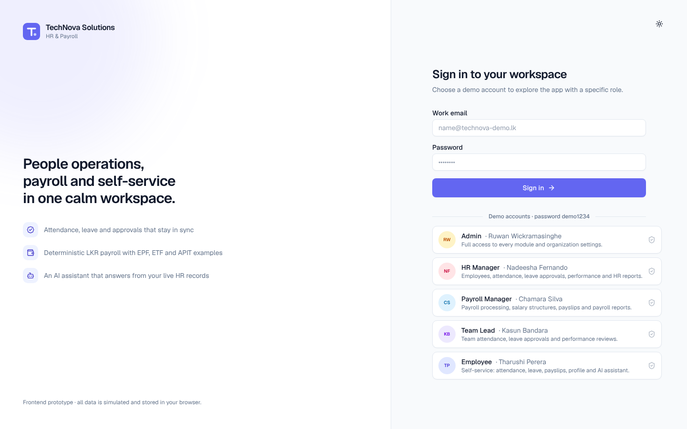
Video Walkthrough: 01 — Application overview
Notes:
- Every demo account uses the password
demo1234. Wrong credentials show an error message; empty fields show inline validation. - Opening a protected page while signed out redirects to the login page and returns you there after signing in.
Switching roles and signing out
Purpose: Compare roles quickly without retyping credentials.
Who can use it: Everyone.
Navigation: Profile menu (top-right) → Switch demo role
Steps:
- Click your name and avatar in the top-right corner.
- Under Switch demo role, click the role you want (your current role is marked Current).
- To sign out, open the same menu and click Log out.
Expected Result: You are redirected to the new role's dashboard and a confirmation toast appears. Logging out returns you to the login page.
Screenshot:
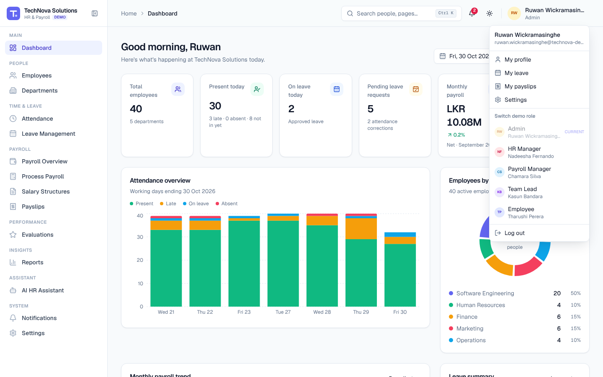
Video Walkthrough: 04 — Leave management (switches between Employee and Team Lead)
2. Navigation
Sidebar, breadcrumbs and search
Purpose: Move around the application quickly.
Who can use it: Everyone (items depend on role).
Navigation: Left sidebar, header
Steps:
- Use the sidebar sections (Main, People, Time & Leave, Payroll, Performance, Insights, Assistant, System). The current page is highlighted.
- Click the collapse button next to the company name to shrink the sidebar to icons; hover an icon to see its label. Click Expand sidebar at the bottom to restore it.
- Use the breadcrumbs in the header to go back up a level.
- Click Search people, pages… or press Ctrl K (⌘K on macOS) to open the command palette. Type a page name, an action ("apply leave") or an employee's name and press Enter.
- Inside modules, use the tab row under the page title (for example Overview · Calendar · Corrections · My Attendance) to switch between related pages.
Expected Result: The selected page opens and the sidebar highlight follows the current route.
Screenshot:
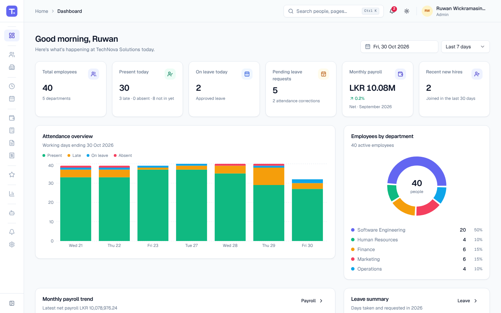
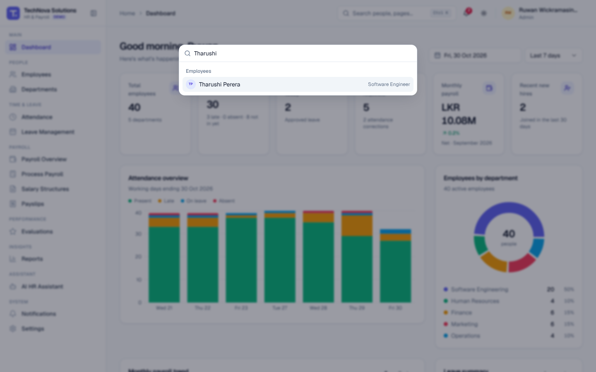
Video Walkthrough: 01 — Application overview
Notes: Employees get a simplified sidebar: My Dashboard, My Profile, My Attendance, My Leave, My Payslips, My Performance, AI Assistant, Notifications and Settings. Opening a page your role can't use shows an "access" message instead of the page.
3. Dashboard
Organisation dashboard
Purpose: See today's headcount, attendance, leave, approvals and payroll at a glance.
Who can use it: Admin, HR Manager (HR figures), Payroll Manager (payroll figures).
Navigation: Sidebar → Dashboard
Steps:
- Review the KPI cards: Total employees, Present today, On leave today, Pending leave requests, Monthly payroll and Recent new hires. Each card is a link to the related module.
- Use the Dashboard date picker to view attendance and leave for an earlier day, and the range selector (Last 7 / 14 / 30 days) to change the attendance chart.
- Hover over any chart to see tooltips: Attendance overview, Employees by department, Monthly payroll trend and Leave summary.
- Work through Pending approvals, read Recent HR activity, and check Upcoming birthdays and Work anniversaries.
- Use Quick actions (Add employee, Review leave, Process payroll, New evaluation, Apply for leave) or the AI HR Assistant shortcuts.
Expected Result: All figures come from the live demo records — for example approving a leave request or processing payroll updates the dashboard immediately.
Screenshot:

Video Walkthrough: 01 — Application overview
Notes: The Payroll Manager dashboard focuses on payroll (monthly payroll, employees paid, current period status, calculation warnings, employer cost and a cost breakdown) and hides HR metrics:
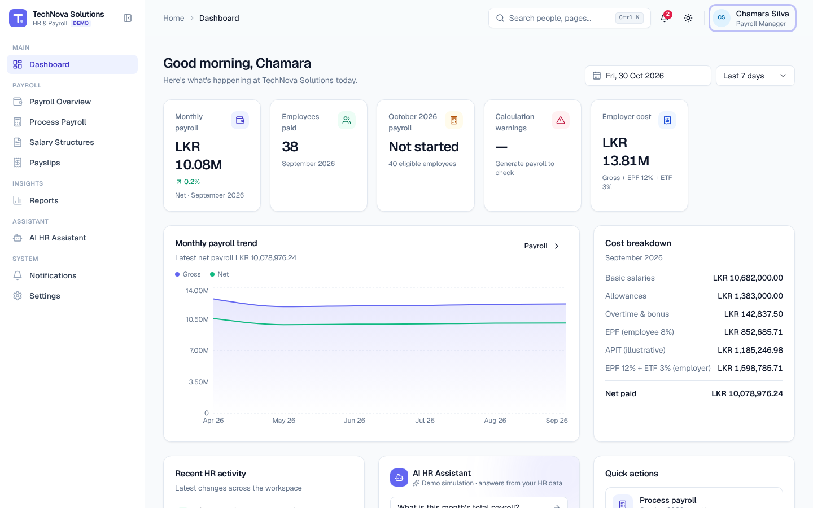
Team lead dashboard
Purpose: Monitor your direct reports.
Who can use it: Team Lead.
Navigation: Sidebar → Dashboard
Steps:
- Check Team members, Present today, On leave today and Pending approvals.
- Review the Team attendance chart for the last seven working days.
- Open items from Pending approvals (leave and attendance corrections from your team).
- Clock yourself in or out from the clock card, and check your team's average performance rating.
Expected Result: Every figure is limited to employees who report to you.
Screenshot:
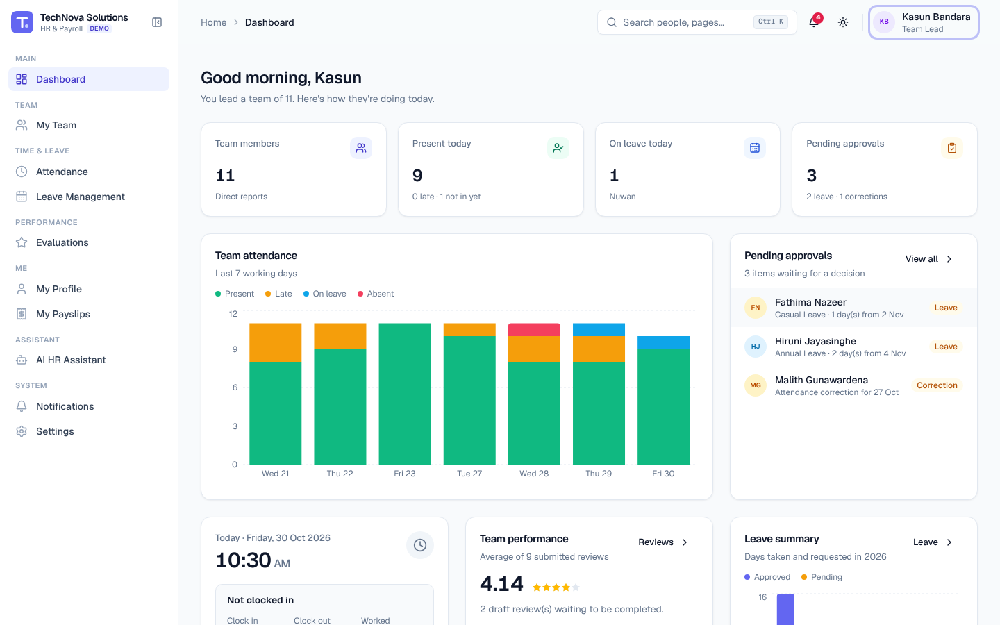
Video Walkthrough: 04 — Leave management
The employee dashboard is described in Employee self-service.
4. Employee management
Searching, filtering and sorting the directory
Purpose: Find employees quickly.
Who can use it: Admin, HR Manager. Team Leads see My Team (their direct reports, read-only).
Navigation: Sidebar → Employees
Steps:
- Type in Search by name, email, ID or role….
- Use All departments to filter by department and Current staff to filter by status (Active, Probation, Notice period, Archived, All).
- Click a column header (Employee, ID, Department, Designation, Joining date, Status) to sort; click again to reverse.
- Use the pagination controls at the bottom (rows per page, previous/next).
- Click Export CSV to download the filtered list.
Expected Result: The table updates instantly; "Showing 1–10 of 40" reflects the filtered count. If nothing matches, an empty state offers Clear filters.
Screenshot:
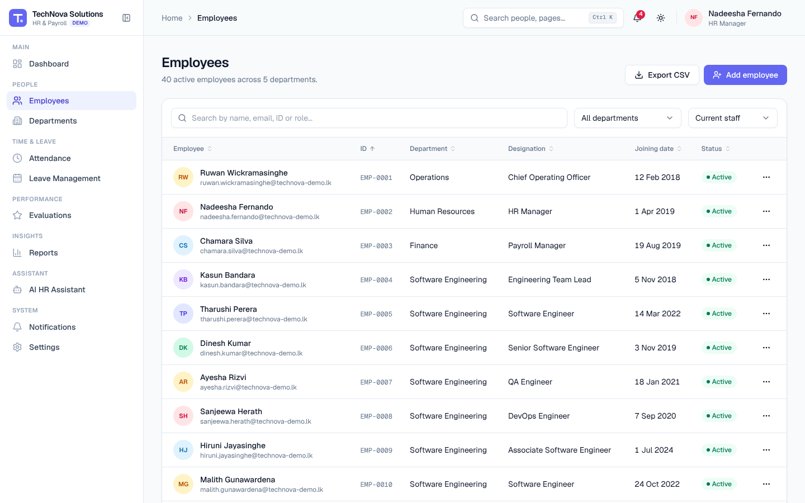
Video Walkthrough: 02 — Employee management
Adding an employee
Purpose: Create a new employee record with personal, employment, salary and additional information.
Who can use it: Admin, HR Manager.
Navigation: Employees → Add employee
Steps:
- Click Add employee.
- Personal information: first and last name, work email, phone, date of birth (use the year and month dropdowns in the calendar), gender, address and an emergency contact.
- Employment information: the employee ID is generated automatically (e.g.
EMP-0041); choose a department, then a designation from that department, a reporting manager (searchable), joining date, employment type and status. - Salary information: basic salary, transport, meal and other allowances, currency and payment frequency (monthly).
- Additional information: add skills (type and press Enter), notes, and optionally upload a profile photo.
- Click Add employee.
Expected Result: The record is saved, a success toast appears and the new employee's profile opens. The directory count increases, and Admin, the Payroll Manager and the reporting manager receive notifications.
Screenshot:
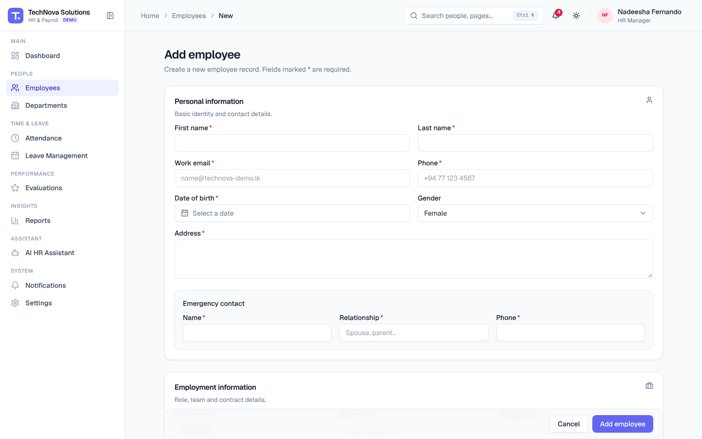
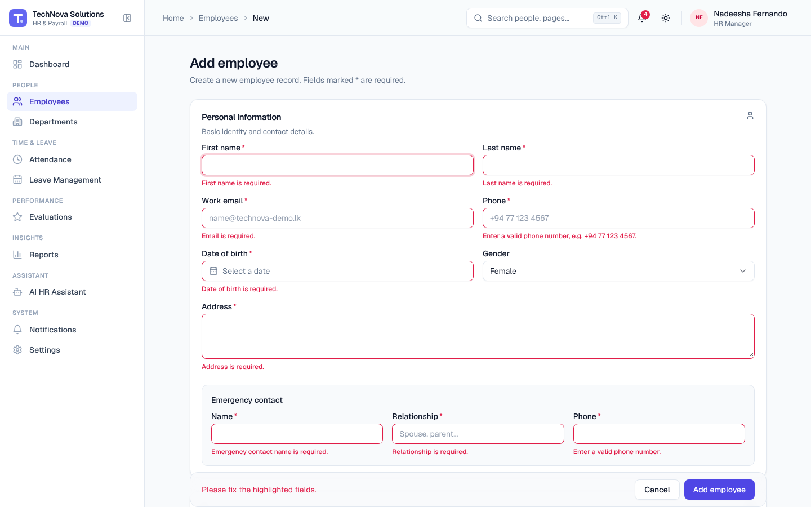
Video Walkthrough: 02 — Employee management
Notes: Required fields are marked *. Email addresses and IDs must be unique, phone numbers must be valid and the date of birth must be before the joining date. If you click Cancel with unsaved changes you are asked to confirm before they are discarded.
Viewing an employee profile
Purpose: See everything about one employee in one place.
Who can use it: Admin, HR Manager, the employee's Team Lead; every employee can see their own profile (My Profile).
Navigation: Employees → click a name
Steps:
- Review the header: photo, name, designation, department, status, email, phone, reporting manager and joining date with tenure.
- Switch between the tabs: Overview, Employment, Attendance, Leave, Payroll and Performance.
Expected Result: Each tab shows that employee's live records — leave balances, attendance history, payslips, evaluations and goals.
Screenshot:
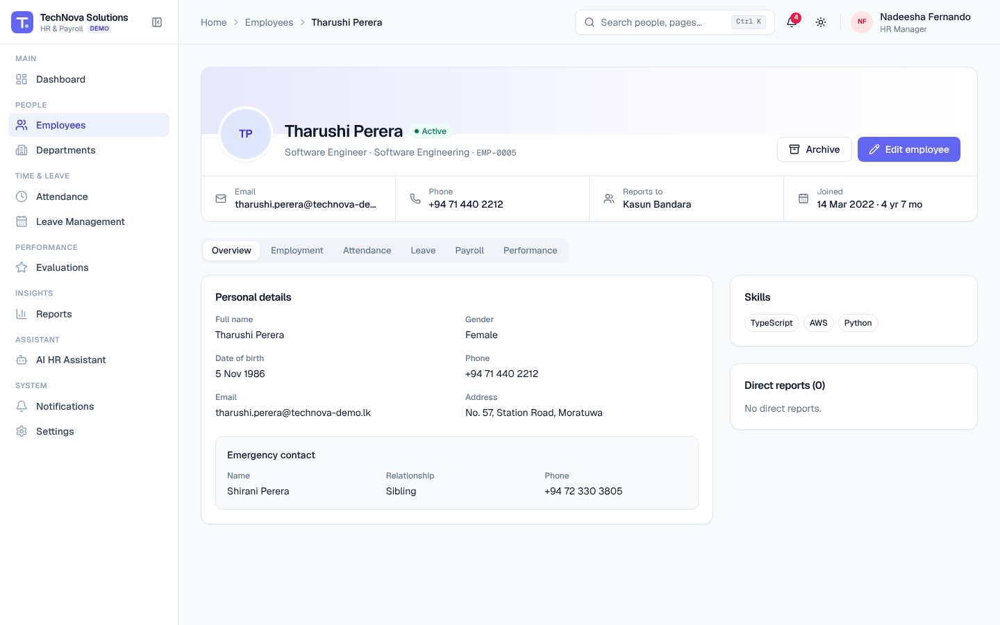
Video Walkthrough: 02 — Employee management
Notes: The Payroll tab is only visible to roles allowed to see salaries (Admin, HR Manager, Payroll Manager) and to the employee themselves.
Editing an employee
Purpose: Update an employee's details.
Who can use it: Admin, HR Manager.
Navigation: Employees → row actions (⋯) → Edit, or profile → Edit employee
Steps:
- Open the edit form — all fields are pre-filled.
- Change the details you need.
- Click Save changes.
Expected Result: The profile opens with the new values and a "Employee updated" toast. Changes persist after a page refresh.
Screenshot:
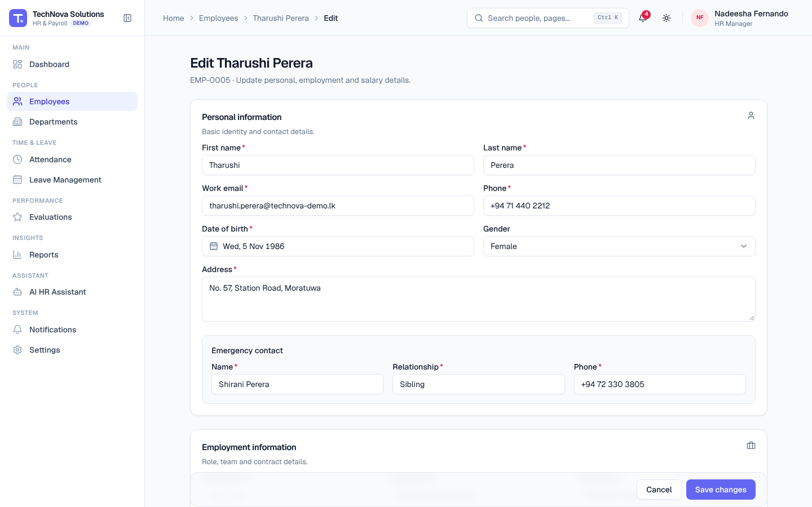
Video Walkthrough: 02 — Employee management
Archiving and restoring an employee
Purpose: Remove leavers from the active directory without deleting their history.
Who can use it: Admin, HR Manager.
Navigation: Employees → row actions (⋯) → Archive
Steps:
- Open the row's actions menu and choose Archive.
- Read the confirmation (archived employees are hidden, excluded from future payroll runs and can be restored) and click Archive employee.
- To restore, set the status filter to Archived, open the row's actions and choose Restore.
Expected Result: The active headcount drops by one; after restoring it returns.
Screenshot:
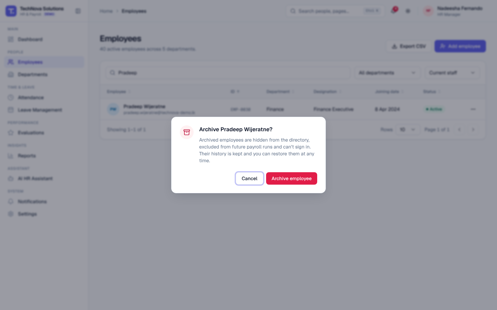
Video Walkthrough: 02 — Employee management
5. Departments and designations
Managing departments
Purpose: Maintain the organisation structure used across every module.
Who can use it: Admin, HR Manager.
Navigation: Sidebar → Departments (also Settings → Departments)
Steps:
- Review the headcount chart and the department cards (code, description, head, headcount, designations).
- Click Add department, enter a name, a 2–5 letter code, description, department head and colour, then click Add department.
- Use a card's actions menu (⋯) to Edit or Archive a department.
- Turn on Show archived to see and Restore archived departments.
Expected Result: New departments are immediately available in the employee form, filters and reports.
Screenshot:
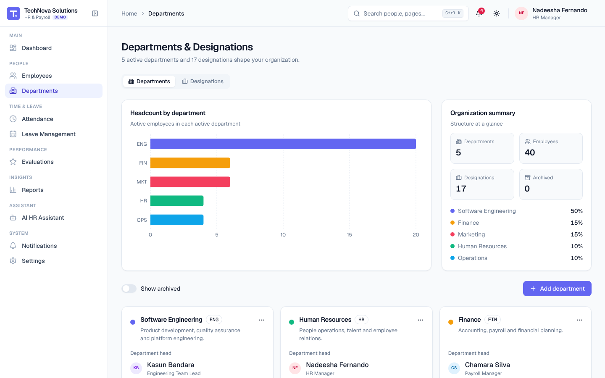
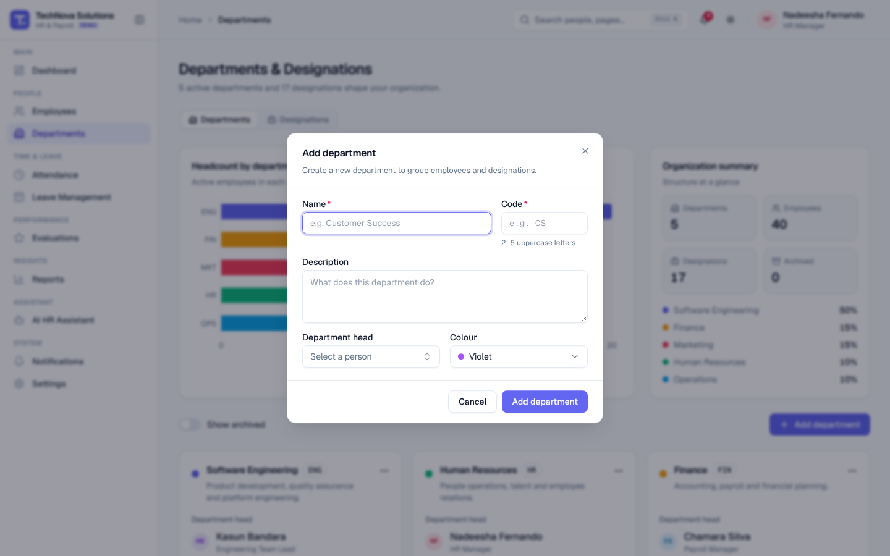
Notes: Codes must be unique. A department that still has active employees can't be archived — you'll see an explanation instead.
Managing designations
Purpose: Maintain job titles per department.
Who can use it: Admin, HR Manager.
Navigation: Departments → Designations tab
Steps:
- Search or filter the designation list by department or status.
- Click Add designation, enter the title, department and level, and save.
- Use the row actions to Edit, Archive or Restore.
Expected Result: Designations appear in the employee form once their department is chosen.
Screenshot:
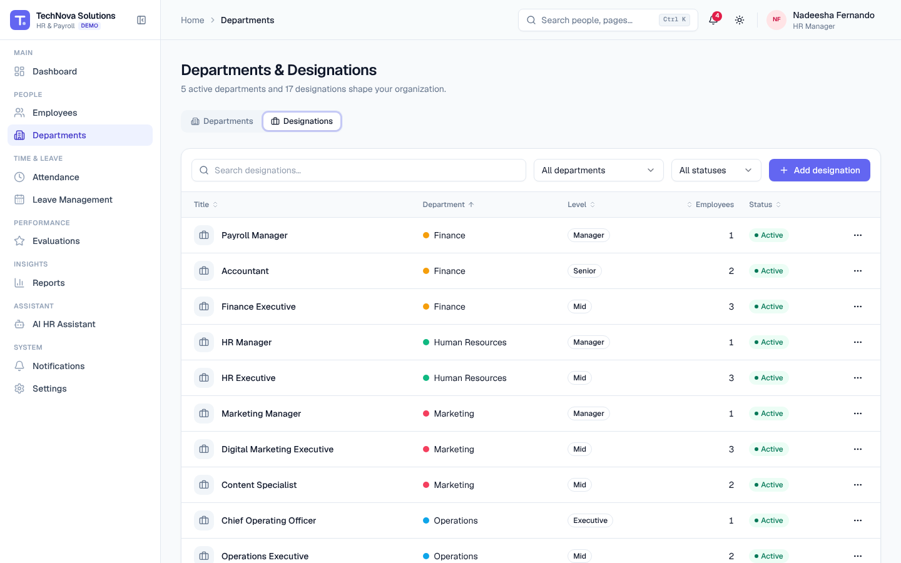
Notes: Designations that are assigned to employees can't be archived.
6. Attendance
Clocking in and out
Purpose: Record working time.
Who can use it: Everyone (for themselves).
Navigation: Sidebar → My Attendance (or the clock card on the dashboard)
Steps:
- Check today's card — it shows the current time and your status (Not clocked in).
- Click Clock in. Your local time is recorded and the status changes to Working since ….
- At the end of the day click Clock out.
Expected Result: A toast confirms each action; after clocking out you see the hours worked (for example Completed — 7h 35m) and today's row appears in your attendance history. Arrivals after 09:15 (09:00 + 15 minutes' grace) are marked Late.
Screenshot:

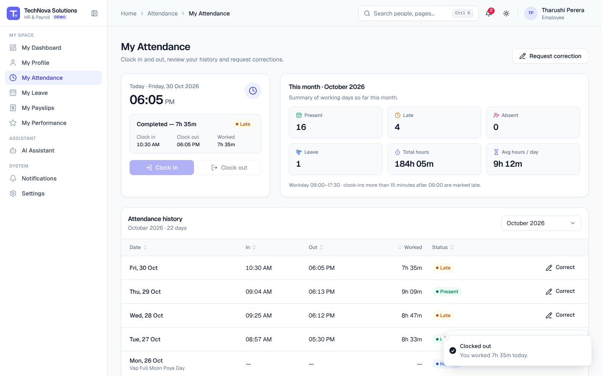
Video Walkthrough: 03 — Attendance management
Notes: The buttons are disabled on weekends, public holidays and days you are on approved leave, with an explanation.
Viewing attendance history
Purpose: Review your own attendance.
Who can use it: Everyone.
Navigation: My Attendance
Steps:
- Review this month's summary (present, late, absent, leave, total and average hours).
- Choose a Month to see the history table (date, in, out, worked, status).
Expected Result: The history reflects clock-ins, approved corrections and leave.
Screenshot:
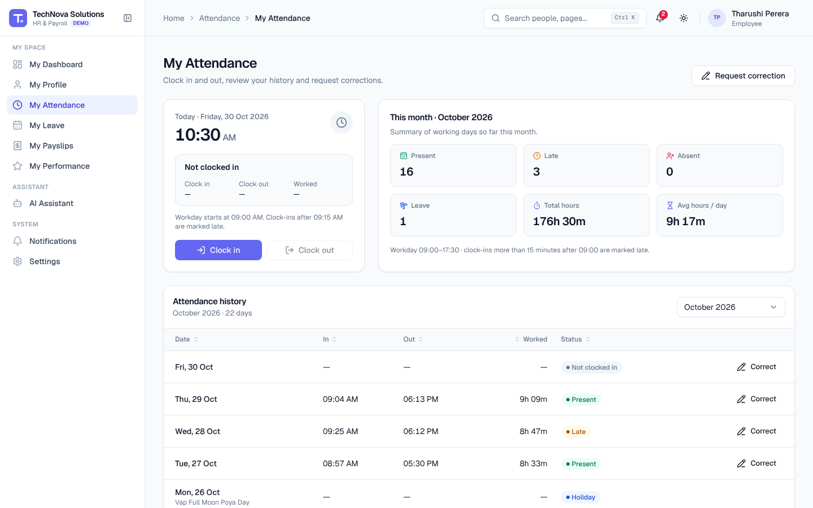
Video Walkthrough: 03 — Attendance management
Requesting an attendance correction
Purpose: Fix a missed or wrong clock-in/out.
Who can use it: Everyone (for themselves).
Navigation: My Attendance → Request correction (or Correct on a history row)
Steps:
- Click Request correction.
- Pick the Date (past working days only). The corrected times are pre-filled from the existing record.
- Adjust Corrected clock in / Corrected clock out and enter a Reason (at least 10 characters).
- Click Submit request.
Expected Result: The request appears under My correction requests as Pending; your manager and HR are notified.
Screenshot:

Video Walkthrough: 03 — Attendance management
Notes: Clock-out must be after clock-in, and you can't have two pending requests for the same day.
Daily attendance and the department overview
Purpose: See who is in, late, absent or on leave.
Who can use it: Admin, HR Manager (everyone), Team Lead (team).
Navigation: Sidebar → Attendance → Overview
Steps:
- Pick a Date (defaults to today).
- Read the KPI cards (Present, Late, Absent, On leave, Not clocked in yet) and the Department attendance chart.
- Filter the daily table by department or status, or search for a person.
Expected Result: Weekends and holidays show a clear "No working day" message instead of empty data.
Screenshot:
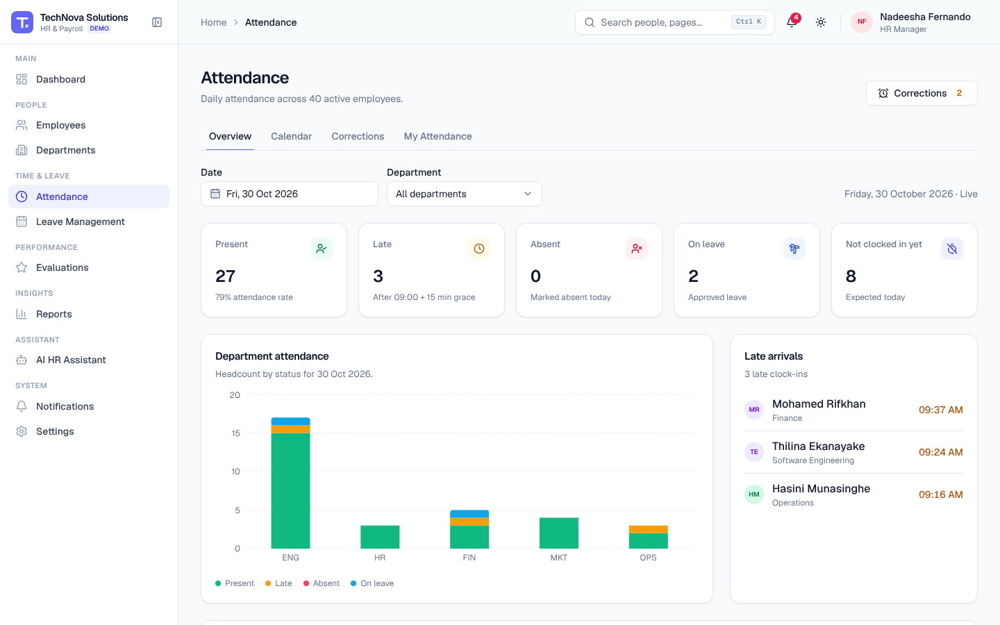
Video Walkthrough: 03 — Attendance management
Attendance calendar
Purpose: View one employee's month at a glance.
Who can use it: Admin, HR Manager, Team Lead.
Navigation: Attendance → Calendar
Steps:
- Choose an Employee.
- Use Previous month / Next month to move between months.
Expected Result: Each day shows its status colour and clock times; weekends and holidays are shaded and a monthly summary is shown alongside.
Screenshot:
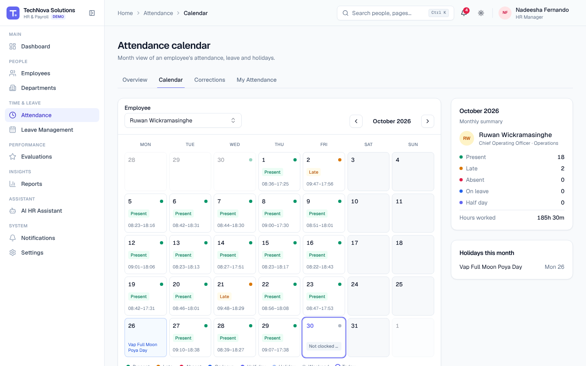
Approving attendance corrections
Purpose: Review correction requests.
Who can use it: Admin, HR Manager, Team Lead (team only).
Navigation: Attendance → Corrections
Steps:
- Open the Pending tab.
- Click Approve or Reject on a request.
- Review the requested vs. original times, add a Comment (required to reject) and confirm.
Expected Result: Approving updates the employee's attendance record (and its Late/Present status); the employee is notified either way.
Screenshot:
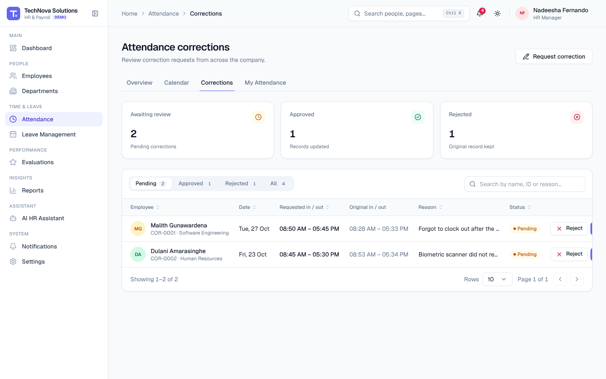
Video Walkthrough: 03 — Attendance management
7. Leave applications
Checking your leave balance
Purpose: Know how much leave you have left.
Who can use it: Everyone.
Navigation: Sidebar → My Leave
Steps:
- Review the balance cards for Annual, Casual, Medical and Unpaid leave (available / allocated, used and pending).
- Scroll to My requests to see your history and filter by status.
Expected Result: Balances already subtract approved and pending days, so they always match your requests.
Screenshot:

Video Walkthrough: 04 — Leave management
Applying for annual leave
Purpose: Request time off.
Who can use it: Everyone.
Navigation: Dashboard → Leave Management → Apply Leave (employees: My Leave → Apply leave)
Steps:
- Open the Apply leave page.
- Click Apply leave.
- Select the Leave type.
- Select the Start date and End date (weekends, public holidays and past dates are disabled).
- Optionally turn on Half day (start and end must be the same day) and choose Morning or Afternoon.
- Enter a Reason and optionally attach a document.
- Review the Summary panel: working days requested, balance before and after, and the leave-type rules.
- Click Submit request.
- Verify the success notification.
Expected Result: The leave request is created with Pending status, appears in My requests, and your manager and HR receive notifications.
Screenshot:

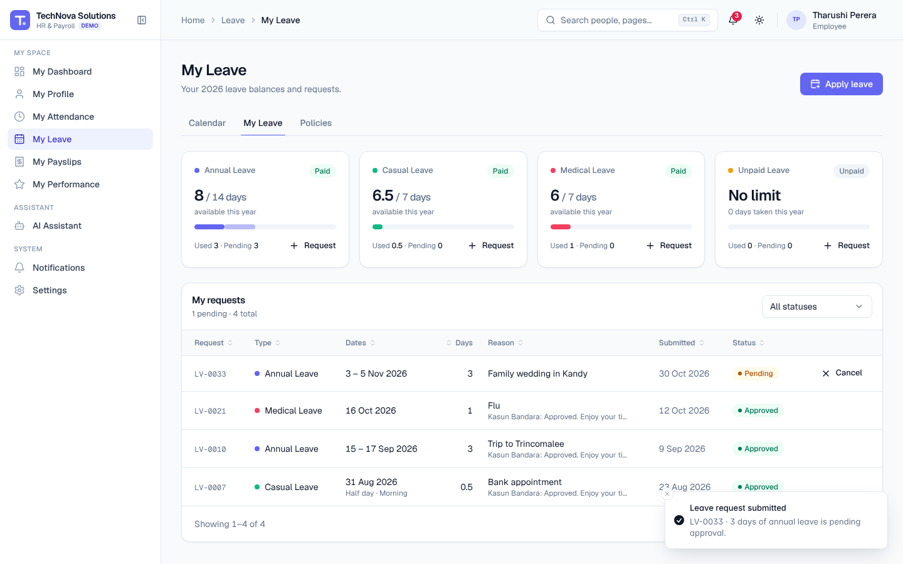
Video Walkthrough: 04 — Leave management
Notes: The form blocks requests that exceed your balance, overlap an existing pending/approved request, or exceed the type's maximum consecutive days. Unpaid leave has no limit and is deducted pro rata in payroll.
Cancelling a request
Purpose: Withdraw a request you no longer need.
Who can use it: Everyone.
Navigation: My Leave → My requests → Cancel
Steps:
- Click Cancel on a pending (or future approved) request.
- Confirm with Cancel request.
Expected Result: The status changes to Cancelled and the days return to your balance.
Leave calendar and policies
Purpose: See who is away and read the rules.
Who can use it: Everyone (scope depends on role).
Navigation: Leave → Calendar / Policies
Steps:
- On Calendar, move between months. Approved leave is shown as solid chips, pending leave as outlined chips, plus public holidays and weekends.
- On Policies, review each leave type's allocation, notice period, maximum consecutive days and attachment rules, the working-day rules and the public holiday list.
Screenshot:
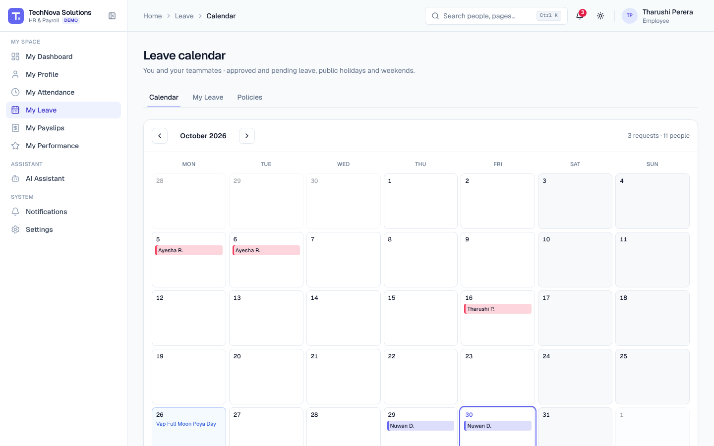
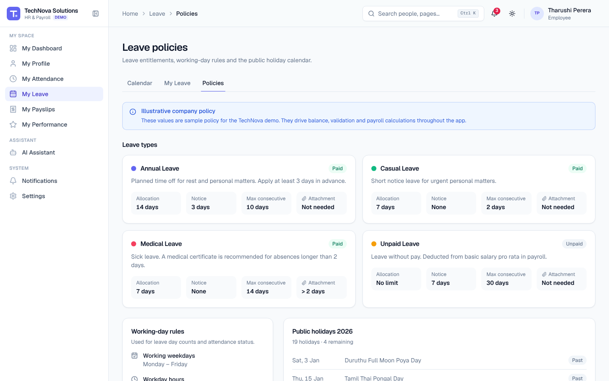
Notes: Policy values are illustrative and can be changed in Settings → Leave policies.
8. Leave approvals
Approving or rejecting a leave request
Purpose: Decide on leave requests from your people.
Who can use it: Admin, HR Manager (everyone), Team Lead (direct reports).
Navigation: Sidebar → Leave Management → Requests
Steps:
- Open the Pending tab (the default). Search or filter by leave type if needed.
- Click Approve (or Reject) on the request.
- In the dialog, review the dates, the employee's remaining balance and any overlapping team leave.
- Add a Comment (optional for approval, required for rejection).
- Click Approve request (or Reject request).
Expected Result: The row shows the new status, the employee gets a notification and their balance updates. The employee sees the decision under My Leave.
Screenshot:
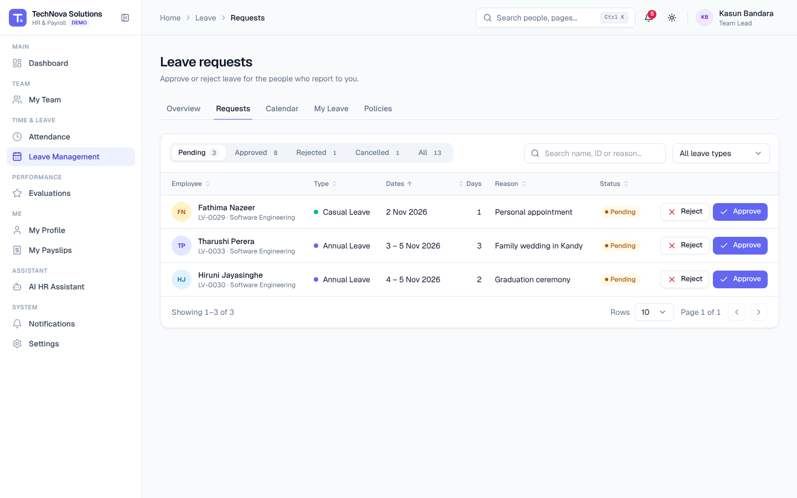
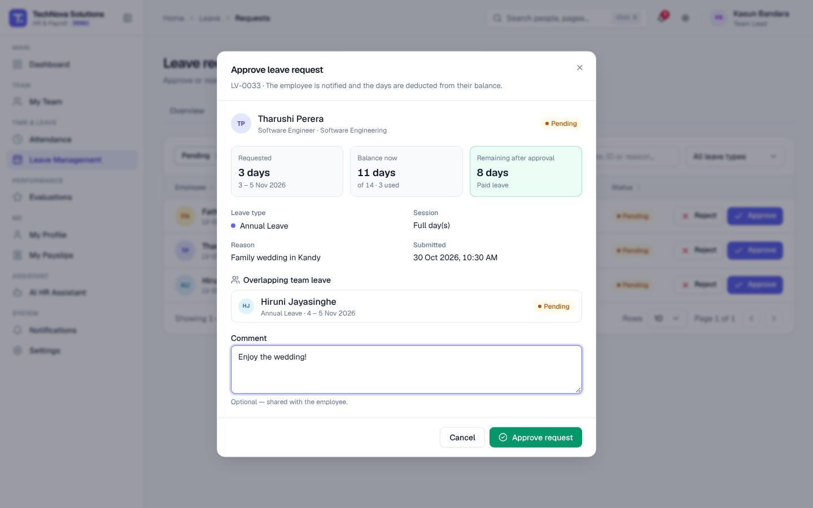
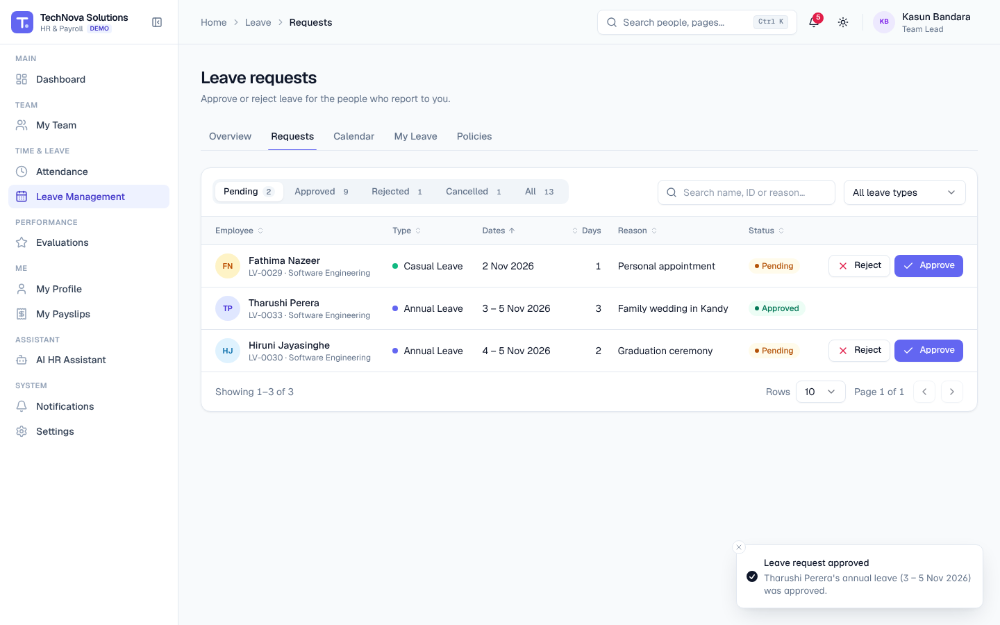
Video Walkthrough: 04 — Leave management
Leave overview
Purpose: Understand leave across the organisation.
Who can use it: Admin, HR Manager, Team Lead.
Navigation: Leave Management → Overview
Steps: Review pending requests, who is on leave today, approved days this month, upcoming leave, leave by type and who's out this week.
Screenshot:
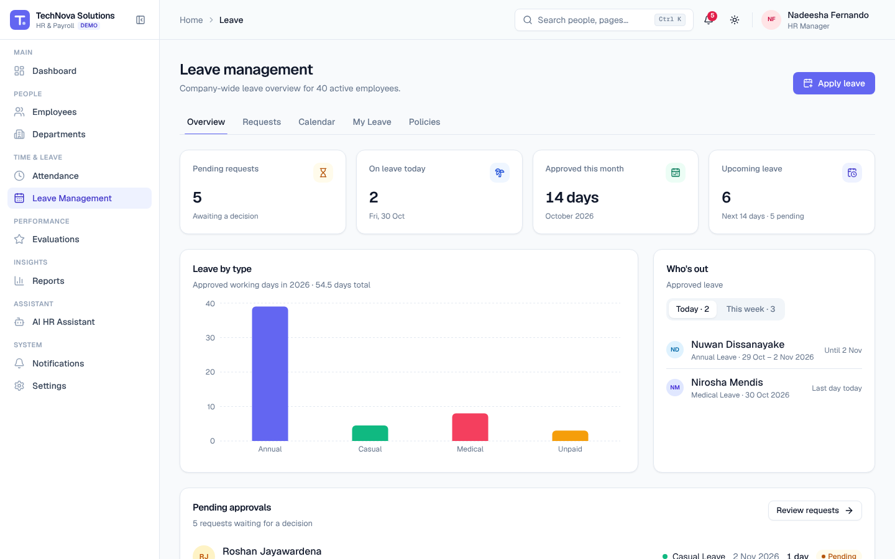
9. Payroll processing
Payroll dashboard
Purpose: See the payroll position at a glance.
Who can use it: Admin, Payroll Manager.
Navigation: Sidebar → Payroll Overview
Steps:
- Review Total monthly payroll (latest processed net, with change vs. the previous run), Employees paid, Pending payroll (current month status), Completed payroll runs, Allowances and Deductions.
- Hover the Payroll trend chart (gross, net and employer cost per run).
- Use the Current period card to start or continue this month's payroll.
- Click Export runs CSV to download a summary of every run.
Screenshot:
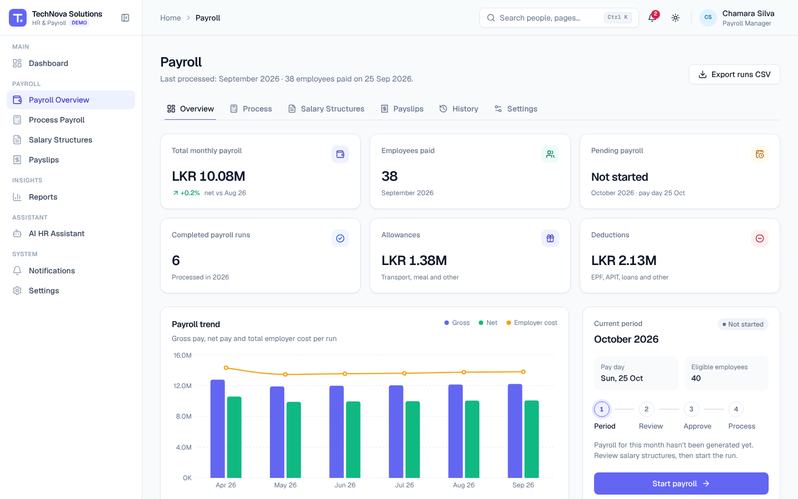
Video Walkthrough: 05 — Payroll management
Running monthly payroll
Purpose: Calculate, review, approve and process salaries for a month, then generate payslips.
Who can use it: Admin, Payroll Manager (in this demo both may approve).
Navigation: Sidebar → Process Payroll
Steps:
- Select the Payroll period (defaults to the current month).
- Click Generate payroll. The deterministic engine calculates earnings, deductions and net pay for every eligible employee.
- Review the totals strip (employees, gross, deductions, net, employer cost, warnings).
- Review the warnings panel — for example mid-month joiners (pro-rated pay), unpaid leave deductions, unexplained absences or deductions above 40% of gross.
- Search the preview table and click any row to open the full Payroll breakdown.
- Use Recalculate after changing salary structures, or Discard draft to start again.
- Click Submit for approval → status becomes Pending Approval.
- Click Approve payroll and confirm → status becomes Approved.
- Click Process payroll, read the confirmation (Process payroll for October 2026?) and click Process payroll.
- Click View payslips.
Expected Result: The run is marked Processed, payslips are generated for every employee in the run, each employee is notified, and the dashboard and reports include the new month.
Screenshot:
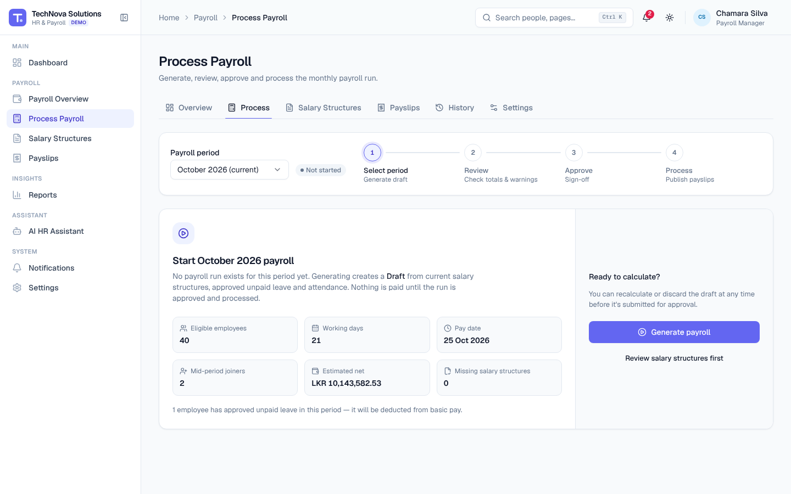
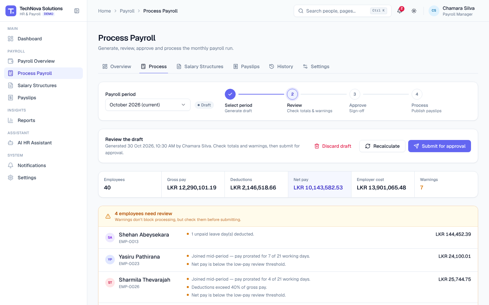
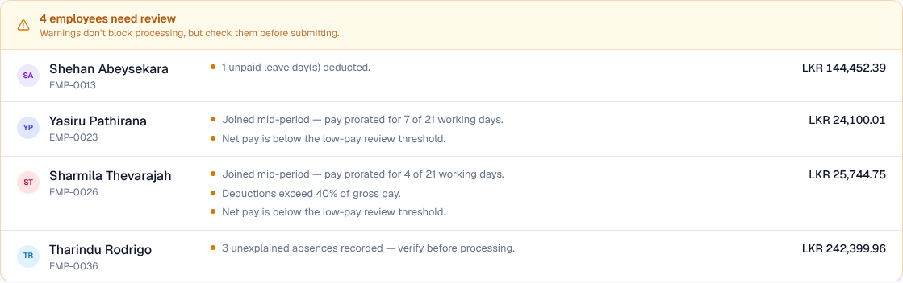
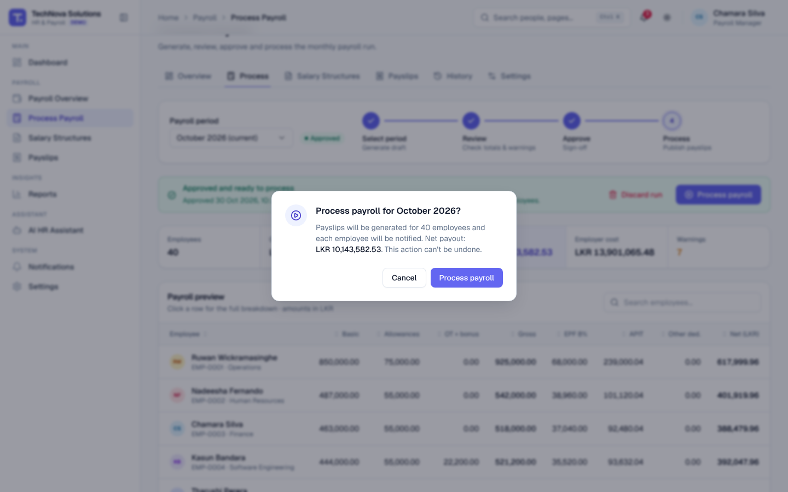
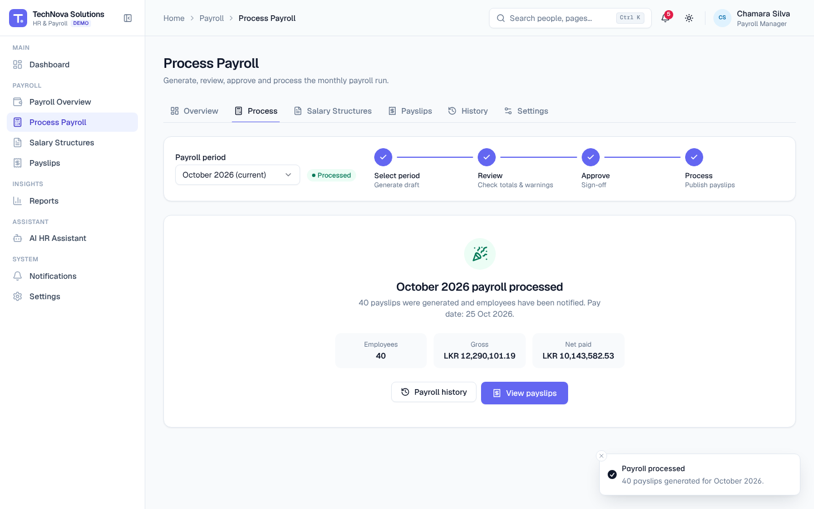
Video Walkthrough: 05 — Payroll management
Notes:
- Statuses: Draft → Pending Approval → Approved → Processed.
- A processed period can't be processed again — the page shows This period has already been processed and no Process button.
- Calculation (illustrative): gross = basic + allowances + overtime (basic ÷ 240 h × 1.5 × hours) + bonus. Deductions = EPF 8% of basic (after unpaid leave) + APIT (example monthly brackets) + loans + other deductions + unpaid leave (basic ÷ working days × days). Employer EPF 12% and ETF 3% are shown as employer cost.
Payroll history
Purpose: Review past runs.
Who can use it: Admin, Payroll Manager.
Navigation: Payroll → History
Steps: Review each run's period, status, employee count, gross, deductions, net and who processed it. Use View payslips for … or Download CSV for … to export a payroll register.
Screenshot:
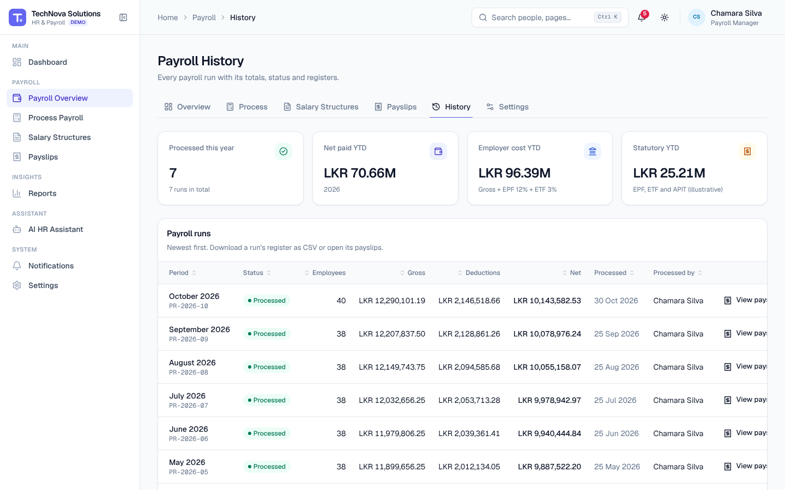
10. Salary structures
Editing an employee's salary structure
Purpose: Maintain each employee's pay components.
Who can use it: Admin, Payroll Manager.
Navigation: Sidebar → Salary Structures
Steps:
- Search or filter the Employee salaries table.
- Click the edit button on a row (Edit salary for EMP-…).
- Update Basic salary, Transport allowance, Meal allowance, Other allowances, Bonus, Overtime hours, Loan deduction or Other deductions.
- Watch the Live preview (gross, EPF, APIT, net and employer contributions for the current month).
- Click Save changes.
Expected Result: A "Salary structure updated" toast appears; the change applies to draft and future payroll runs (processed payslips are never altered).
Screenshot:
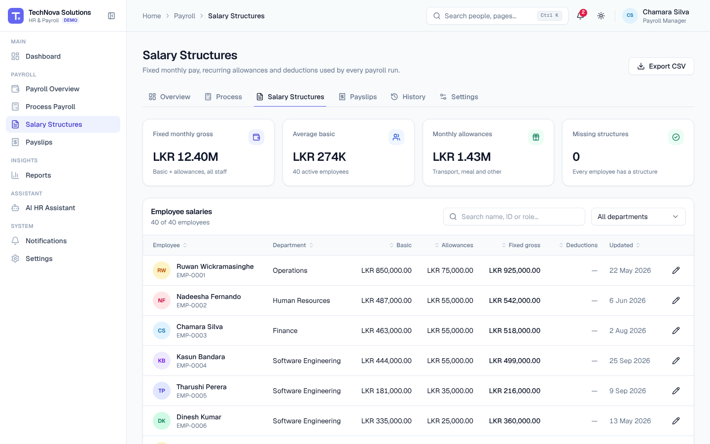
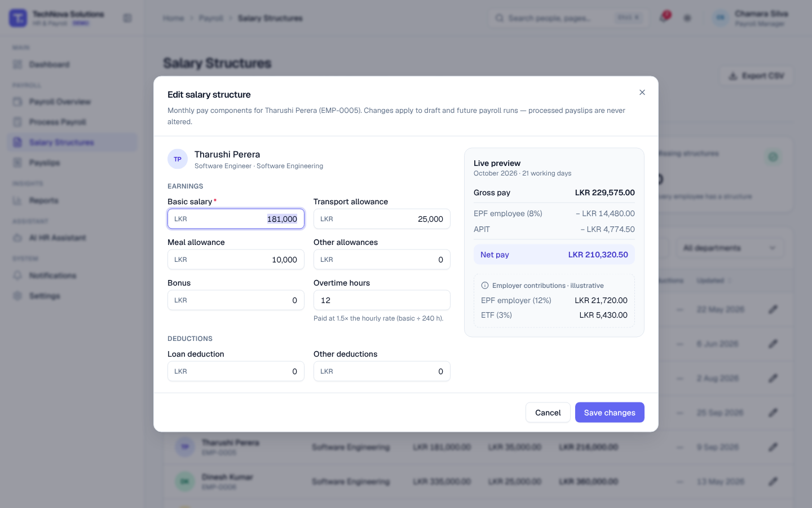
Video Walkthrough: 05 — Payroll management
Notes: All amounts must be zero or more. Click Export CSV to download the salary table.
Payroll settings
Purpose: Configure pay day, statutory example rates and APIT brackets.
Who can use it: Admin, Payroll Manager.
Navigation: Payroll → Settings (also Settings → Payroll)
Steps: Edit the pay day, overtime multiplier, standard monthly hours, low-pay review threshold, EPF/ETF percentages, enable/disable APIT and edit its brackets, then click Save settings.
Screenshot:
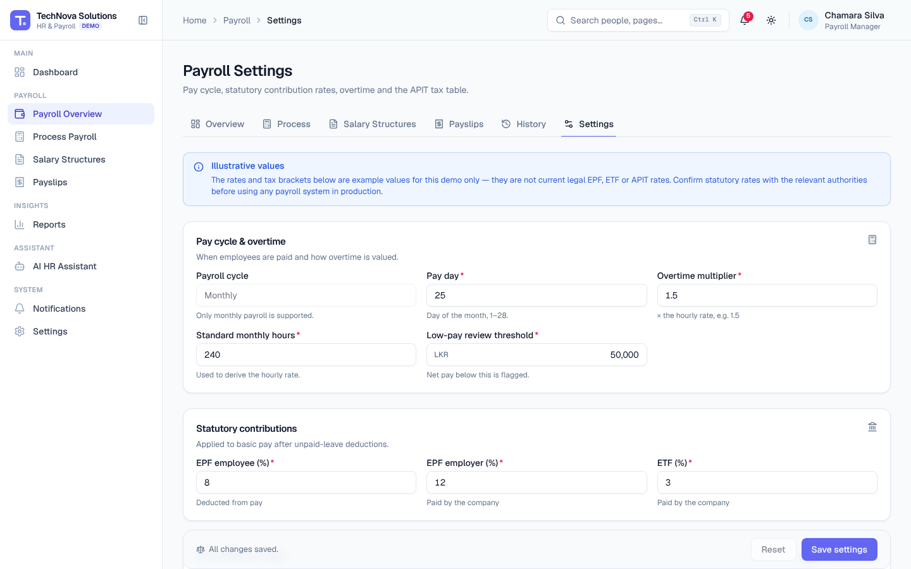
Notes: These are clearly labelled illustrative values, not current legal rates.
11. Payslips
Viewing, printing and downloading a payslip
Purpose: Access payslips generated by processed payroll runs.
Who can use it: Admin and Payroll Manager (all payslips); everyone else (their own — My Payslips).
Navigation: Sidebar → Payslips / My Payslips
Steps:
- Choose a Period and search (payroll roles), or open your latest payslip card (everyone else).
- Click View on a payslip.
- Review the company details, employee details, earnings, deductions, net pay and employer contributions.
- Click Print for a clean printed copy, or Download PDF to save it.
Expected Result: A PDF named like payslip-EMP-0005-2026-10.pdf is downloaded and a toast confirms it.
Screenshot:
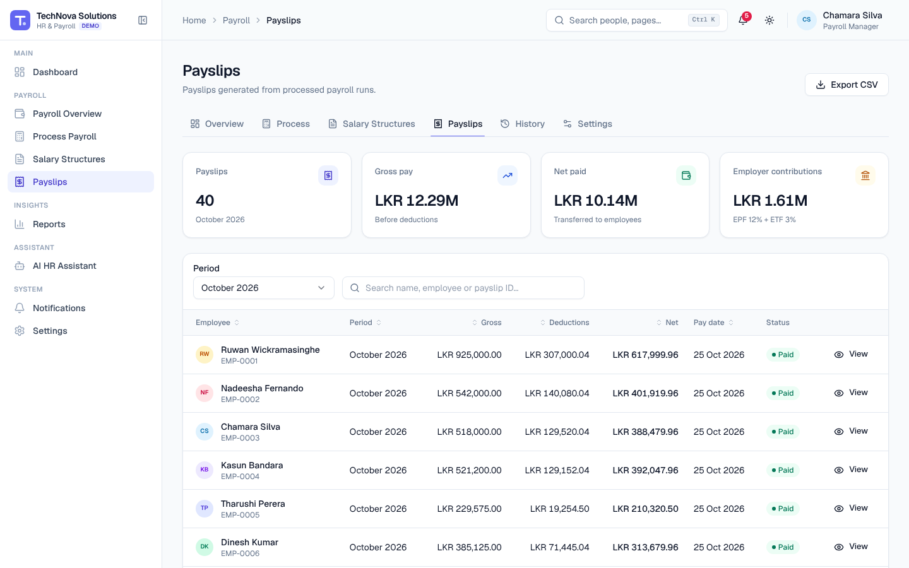

Video Walkthrough: 05 — Payroll management
Notes: Opening someone else's payslip without permission shows an access message. Payslips print on white even in dark mode.
12. Performance evaluations
Creating and submitting an evaluation
Purpose: Record a manager review on a 1–5 scale across seven criteria.
Who can use it: Admin, HR Manager, Team Lead (direct reports).
Navigation: Sidebar → Evaluations → New evaluation
Steps:
- Click New evaluation (or Start review next to someone in Due for review).
- Choose the Employee, Review type and Review period.
- Rate each criterion from 1 to 5: Attendance & punctuality, Communication, Teamwork, Quality of work, Technical knowledge, Problem solving and Productivity. The Overall rating updates live.
- Write Strengths, Areas for improvement and Comments.
- Click Save draft to finish later, or Submit evaluation.
Expected Result: The evaluation details page opens with the overall rating and per-criterion bars; the employee and HR are notified.
Screenshot:
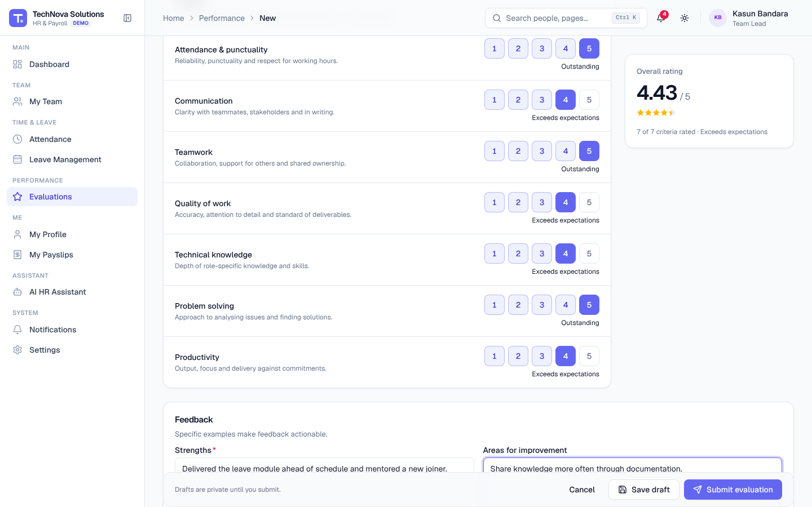
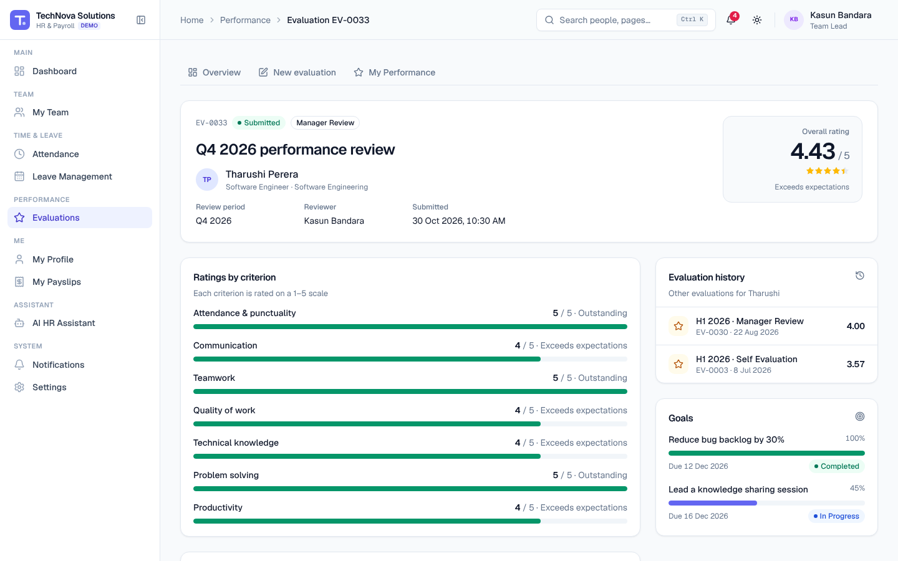
Video Walkthrough: 06 — Performance management
Notes: Submitting requires all seven ratings and at least one strength. Drafts can be edited or deleted from the details page.
Performance overview
Purpose: Track review progress and ratings.
Who can use it: Admin, HR Manager, Team Lead.
Navigation: Evaluations → Overview
Steps: Review average rating, reviews submitted, drafts and goal completion, the rating distribution and department averages, then search or filter the evaluations list.
Screenshot:
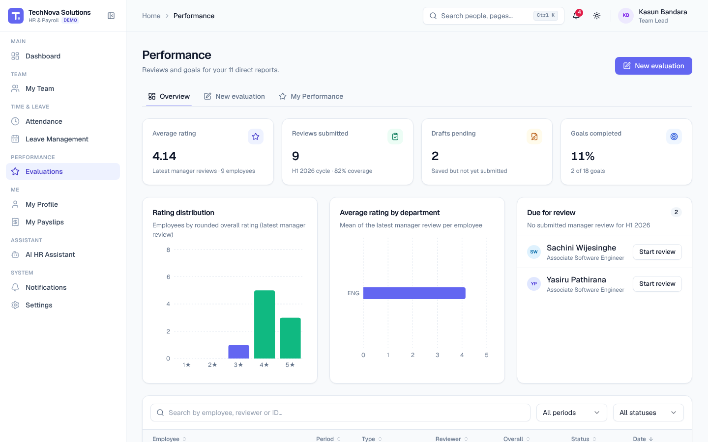
My performance and goals
Purpose: See your reviews and track your goals.
Who can use it: Everyone.
Navigation: My Performance
Steps: Review your latest rating and history, update goal progress and click Update, click Add goal to create a goal, or Start self evaluation.
Screenshot:

13. Employee self-service
Employee dashboard
Purpose: Give employees everything they need without contacting HR.
Who can use it: Employee (and the "My …" pages for every role).
Navigation: Sidebar → My Dashboard
Steps:
- Read the welcome greeting and today's date.
- Use the clock card to Clock in / Clock out.
- Check your Leave balance and click Apply leave.
- Open your Latest payslip.
- Review Recent attendance, Pending requests, Upcoming holidays and My goals.
- Use Quick actions or the AI HR Assistant shortcuts.
Expected Result: Common tasks — attendance, leave, payslips, profile updates — can be completed directly.
Screenshot:

Video Walkthrough: 08 — Employee self-service
Updating your contact details
Purpose: Keep your phone, address, emergency contact and photo current.
Who can use it: Everyone.
Navigation: My Profile → Update contact details
Steps: Edit the fields, optionally upload a new photo, and click Save details.
Expected Result: Your profile updates immediately and HR sees the new details.
See the Employee Guide for a complete self-service walkthrough.
14. AI HR Assistant
Asking questions
Purpose: Get instant answers from live HR records.
Who can use it: Everyone. Answers respect the current role's permissions.
Navigation: Sidebar → AI HR Assistant / AI Assistant
Steps:
- Click a suggested question or type your own in Ask about leave, attendance, payslips… and press Enter.
- Watch the typing indicator, then read the answer and its result card (figures, tables and links).
- Click Clear conversation to start over.
Expected Result: Answers come from the same data as the rest of the app — e.g. "How many leave days do I have?" shows your real balances.
Screenshot:
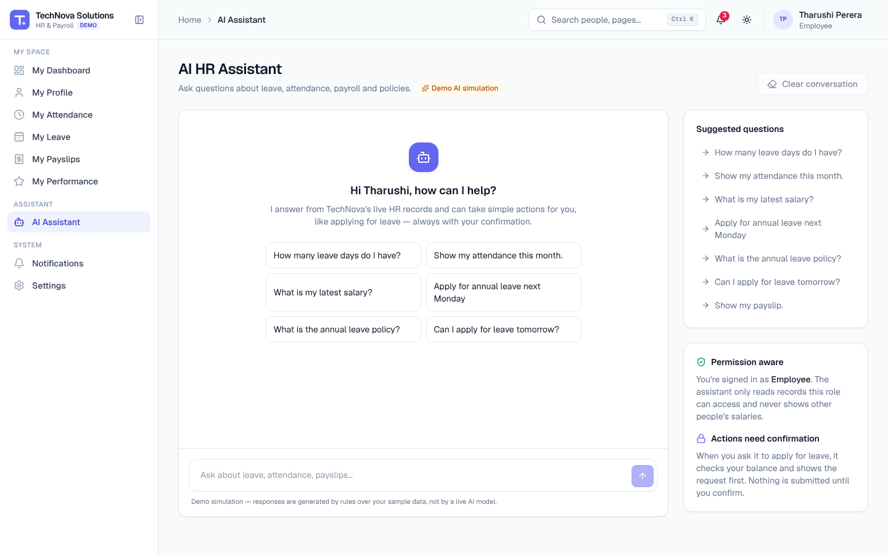
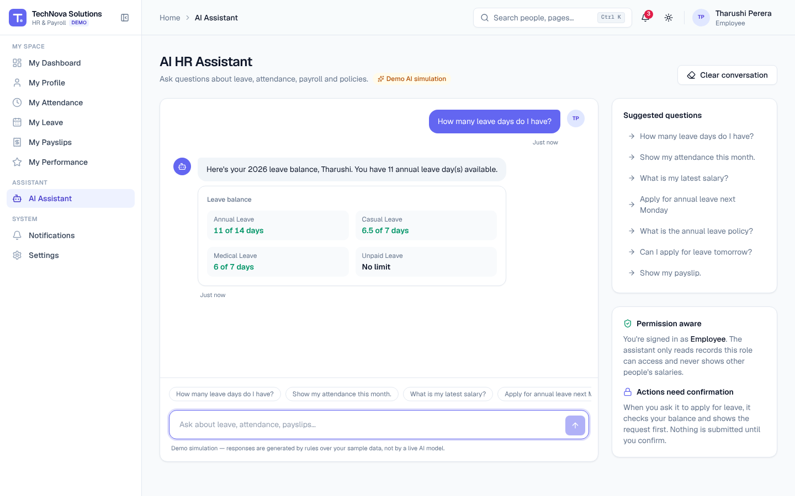
Video Walkthrough: 07 — AI HR Assistant
Example questions:
| Role | Try asking |
|---|---|
| Employee | How many leave days do I have? · Show my attendance this month. · What is my latest salary? · Can I apply for leave tomorrow? · Show my payslip. · What is the annual leave policy? |
| HR Manager | How many employees are absent today? · Show pending leave requests. · Which employees joined this month? · Summarize employee attendance. · How many employees work in IT? |
| Payroll Manager | What is this month's total payroll? · Are there any payroll calculation warnings? · Show pending payroll records. · Summarize salary expenses. |
Applying for leave through the assistant
Purpose: Let the assistant prepare and submit a leave request for you.
Who can use it: Everyone (for themselves).
Navigation: AI Assistant
Steps:
- Type a request such as Apply for annual leave next Monday for 2 days (you can also say "sick leave", "casual leave on 6 Nov", "from 3 Nov to 5 Nov").
- The assistant identifies you, checks your balance and the rules, and shows a Leave request · review before submitting card with type, dates, working days, reason and balance after.
- Click Confirm and submit (or Cancel).
Expected Result: A leave request (e.g. LV-0033) is created with Pending status and source "AI Assistant", your approver is notified, and the assistant links to View my leave.
Screenshot:

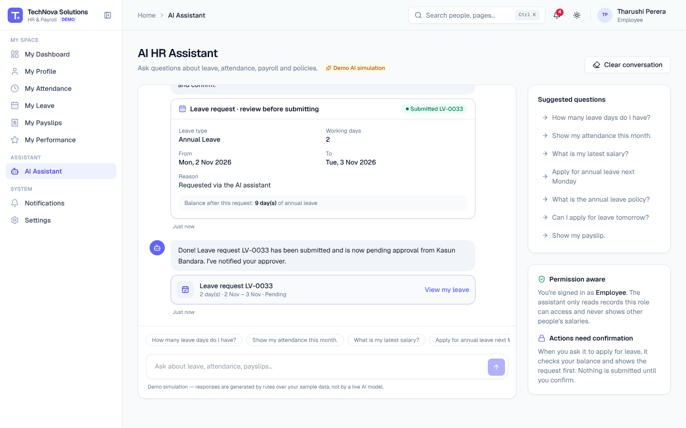
Video Walkthrough: 07 — AI HR Assistant
Notes: This is a clearly labelled demo simulation built with deterministic rules — no external AI service is called and salary figures always come from the payroll engine. Questions outside your role's permissions are politely declined.
15. Reports
Running, filtering and exporting a report
Purpose: Analyse HR and payroll data and share it.
Who can use it: Admin (all reports), HR Manager (Employee, Attendance, Leave), Payroll Manager (Payroll).
Navigation: Sidebar → Reports
Steps:
- On Reports, click Open report on Employee, Attendance, Leave or Payroll.
- Filter by date range, Department, Employee and search text (plus report-specific filters such as leave status or type).
- Review the KPI strip, chart and table.
- Click Download CSV, Export PDF or Print.
Expected Result: Real files are downloaded (for example payroll-report-2026-10-30.csv). When no records match, an empty state explains why.
Screenshot:
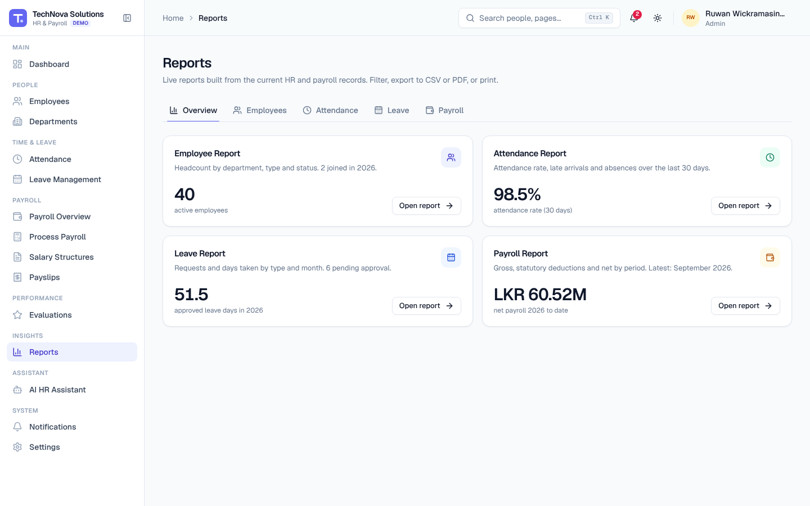
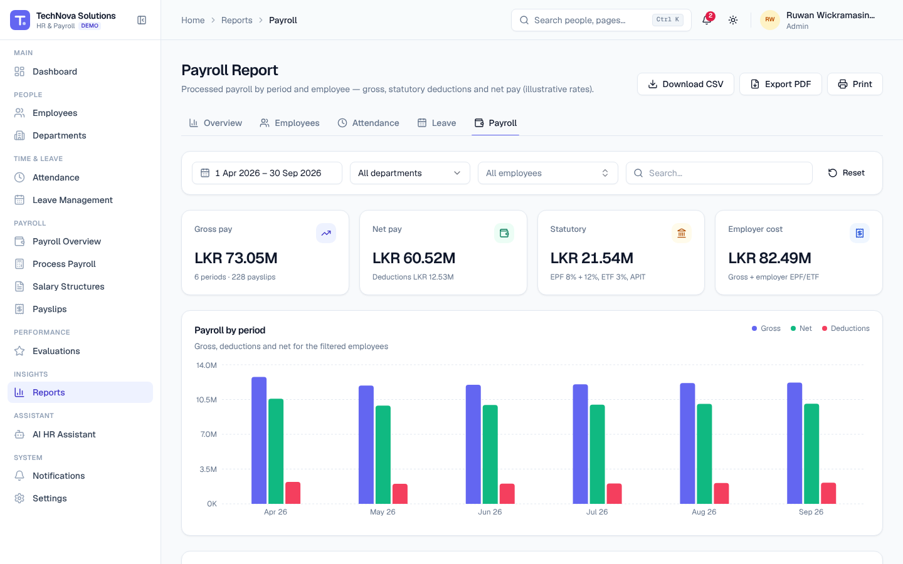
Notes: All figures are calculated from the live demo data.
16. Notifications
Reading notifications
Purpose: Stay informed about requests, approvals and payroll.
Who can use it: Everyone.
Navigation: Bell icon in the header → View all notifications
Steps:
- The bell shows your unread count. Click it to see recent notifications; click one to open the related page (it is marked as read).
- Click Mark all as read in the dropdown or on the Notifications page.
- On the Notifications page, filter by All / Unread and by type, and mark individual items read or unread.
Expected Result: The unread badge updates immediately.
Screenshot:
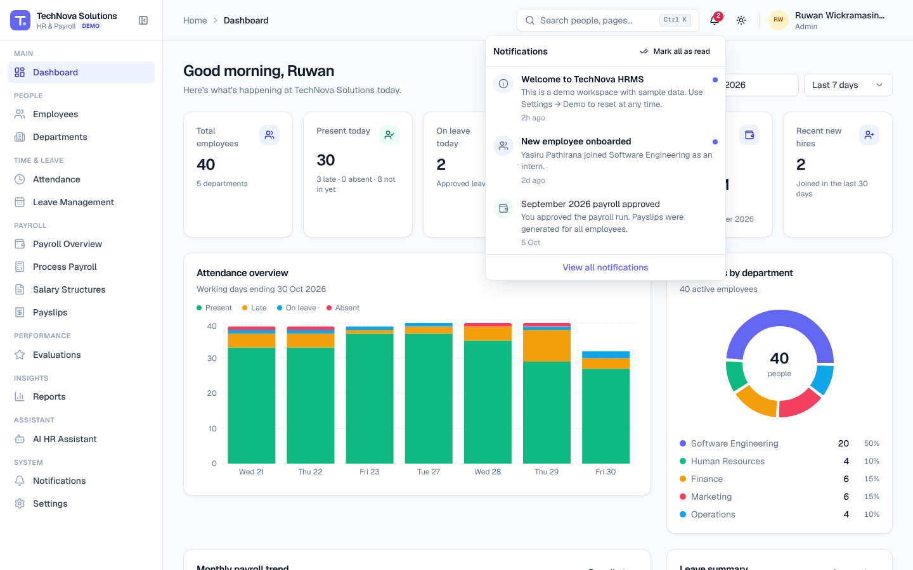
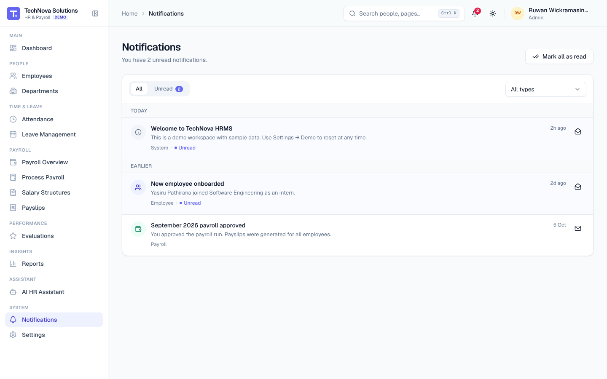
Notes: Notifications are created by real actions — leave submitted/approved/rejected, payroll processed, payslip generated, attendance corrections and performance reviews. You can mute types in Settings → Preferences.
17. Settings
Organization settings
Purpose: Maintain company details and branding.
Who can use it: Admin.
Navigation: Settings → Organization
Steps: Edit company name, legal name, address, country, currency, time zone, contact details, registration number and website; upload a logo; click Save changes.
Expected Result: The sidebar brand and payslips use the new name and logo immediately.
Screenshot:
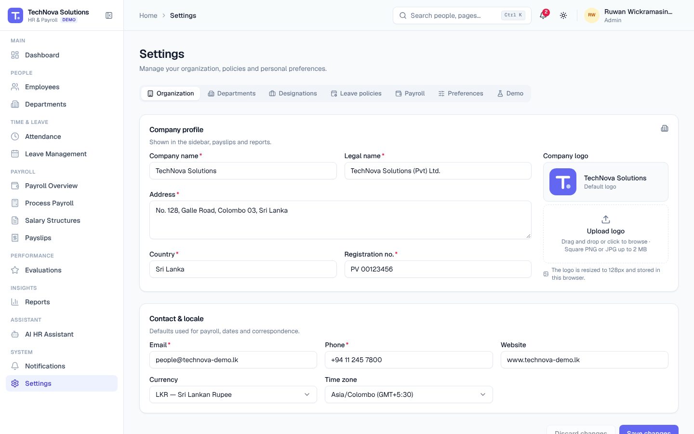
Leave policies and working-day rules
Who can use it: Admin, HR Manager.
Navigation: Settings → Leave policies
Steps: Edit allocation, notice days and maximum consecutive days per leave type and toggle types on or off (Save leave types); choose working weekdays, workday start/end, grace minutes and half-day hours (Save working-day rules).
Screenshot:
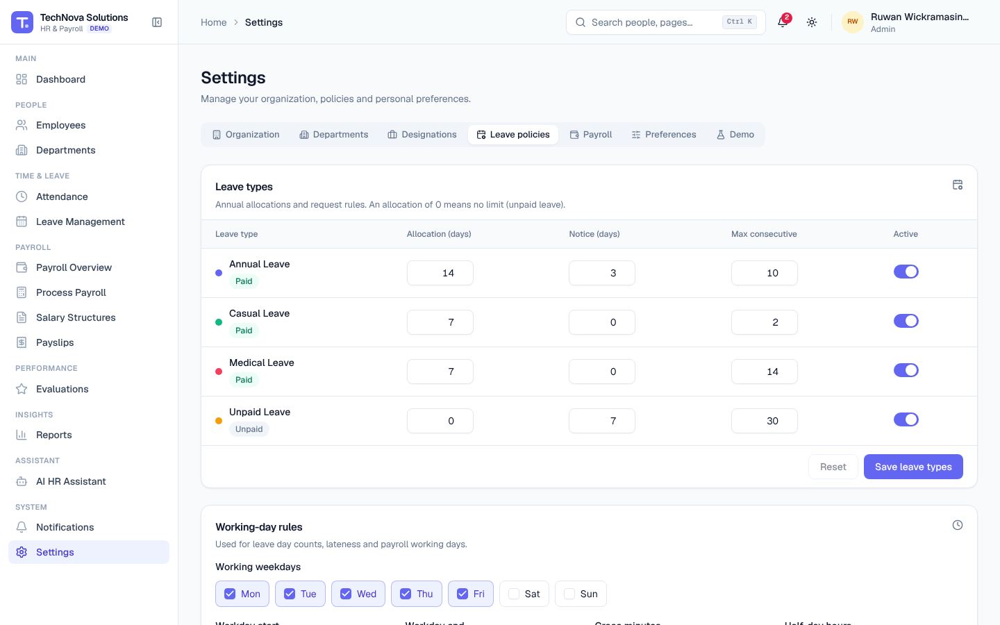
Preferences and demo management
Who can use it: Everyone.
Navigation: Settings → Preferences / Demo
Steps:
- Preferences: choose a theme and turn notification types on or off (changes save instantly).
- Demo: switch to another demo role, Reset demo data (with confirmation) or Restore sample records, and review data statistics.
Screenshot:
18. Light and dark themes
Changing the theme
Purpose: Use the interface in light, dark or your system's theme.
Who can use it: Everyone.
Navigation: Header sun/moon button, or Settings → Preferences
Steps:
- Click the theme button in the header.
- Choose Light, Dark or System.
Expected Result: The whole interface — charts, dialogs, dropdowns, date pickers and notifications — switches instantly and the choice is remembered.
Screenshot:
Video Walkthrough: 01 — Application overview
19. Mobile usage
Using TechNova HR on a phone or tablet
Purpose: Complete common tasks on smaller screens.
Who can use it: Everyone.
Navigation: Same as desktop.
Steps:
- On phones, tap the menu button (☰) in the top-left to open the navigation drawer; tap a page to go there.
- Dashboards stack into a single column; forms become single-column; tables scroll horizontally inside their card and hide secondary columns.
- Dialogs open as bottom sheets with large touch targets.
- On tablets the sidebar becomes a compact icon rail.
Screenshot:
| Phone dashboard | Navigation drawer | Apply leave |
|---|---|---|
 |
 |
Notes: No page scrolls sideways on a 390 px wide phone — this is checked automatically by the Playwright test suite.
20. Troubleshooting
| Problem | Solution |
|---|---|
| Dashboard numbers show zero people present | The sample data is dated to the day it was generated. Go to Settings → Demo → Reset demo data. |
| "Those credentials don't match a demo account" | Click a demo account card, or use password demo1234 with a demo email. |
| A page says you don't have access | Your current role can't open that module. Switch role from the profile menu. |
| Clock in is disabled | It's a weekend, a public holiday, you're on approved leave, or you've already clocked in today. |
| Leave request can't be submitted | Read the message in the Summary panel: insufficient balance, overlapping request, no working days in the range, or too many consecutive days. |
| Payroll can't be processed | Runs must go through Generate → Submit for approval → Approve → Process. A month that is already processed can't be processed again. |
| I want a clean slate | Settings → Demo → Reset demo data, or clear the site's browser storage. |
| Changes disappeared | Data is stored in this browser only; a different browser or private window starts with fresh sample data. |
| Playwright can't find a browser | Run npx playwright install chromium. |
| Port 3000 is in use | Stop the other process, or run npx next dev -p 3001 (tests expect port 3000). |